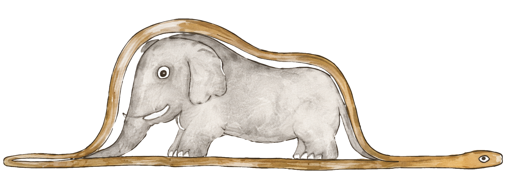

הנסיך הקטן
✦
☰
בית
הפרקים
אודות
עבור/י לפרק...
פרק 1 - נחש הבואה
פרק 2 - המפגש בסהרה
פרק 3 - הכוכב הזעיר
פרק 4 - האסטרונום הטורקי
פרק 5 - עצי הבאובב (בקרוב)
פרק 6 - ארבעים וארבע שקיעות (בקרוב)
פרק 7 - קוצים ושושנים (בקרוב)
פרק 8 - השושנה הגנדרנית (בקרוב)
פרק 9 - הפרידה מהשושנה (בקרוב)
פרק 10 - המלך (בקרוב)
פרק 11 - השחצן (בקרוב)
פרק 12 - השיכור (בקרוב)
פרק 13 - איש העסקים (בקרוב)
פרק 14 - מדליק הפנסים (בקרוב)
פרק 15 - הגיאוגרף (בקרוב)
פרק 16 - כדור הארץ (בקרוב)
פרק 17 - הנחש בסהרה ושיח על בדידות (בקרוב)
פרק 18 - הפרח בעל שלושת העלים (בקרוב)
פרק 19 - ההר וההד (בקרוב)
פרק 20 - גן השושנים (בקרוב)
פרק 21 - השועל (בקרוב)
פרק 22 - פקיד הרכבת (בקרוב)
פרק 23 - הרוכל (בקרוב)
פרק 24 - הבאר (בקרוב)
פרק 25 - דלי המים (בקרוב)
פרק 26 - הפרידה מן הנחש (בקרוב)
פרק 27 - מבט אל הכוכבים (בקרוב)
בית
/
כל הפרקים
/
פרק 1

✦
פעילויות לימודיות בעקבות הפרק
← הפרק הקודם
זהו הפרק הראשון
הפרק הבא →
פרק 2: המפגש בסהרה